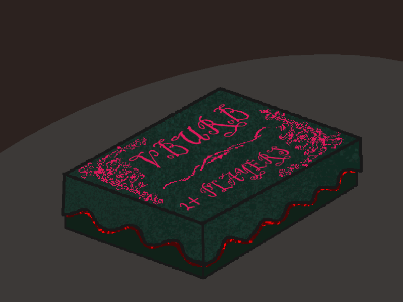

Contents

The box was opened. In it were 3 items. A game manual, a compass, and a countdown timer that had seemingly started counting down from 48 hours the second it was created. The manual had cryptic letters on it and the compass was pointing to an arbitrary direction.
Tarda carefully lifted all the contents and put them on the table, looking around in the box for more items but there wasn't any.
Aegis went up to the cryptic manual and pulled out a notebook titled 'Language of the Stars'. In it were different alphabets and ciphers.
There were some flat stares that seemed to say "Here he goes with his alien obsession." but also an understanding to not interfere. The machine did fall in a meteor so who was to say it ~wasn't~ alien.
Apollo: I was really hoping for magical real life dnd.
Coy: Same here. But this doesn't even seem to be playable, I mean... a cryptic manual, a compass, and a timer...
Pongo: GUYS! It's like a scavenger hunt, and we get treasure at the end! We have to do this.
It was getting late. There was a moment of silence where they all looked at each other, nodding, shrugging. There was understanding, it was too late for adventure.
Everyone: Nahhhhhhh.
Apollo: Well then, we leave at first dawn!
Get LateGo Back